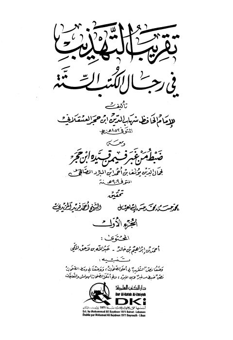

Downloads need an internet connection.
تقريب التهذيب في رجال الكتب الستة ومعه ضبط من غبر فيمن قيده ابن حجر
Authors: أحمد بن علي بن حجر العسقلاني
Editors: محمد حسن محمد حسن إسماعيل أحمد فريد المزيدي
Publishers: دار الكتب العلمية
**▫️ العنوان: تقريب التهذيب في رجال الكتب الستة ومعه ضبط من غبر فيمن قيده ابن حجر** ▪️ المؤلف: #أحمد_بن_علي_بن_حجر_العسقلاني ▫️ المحقق: #محمد_حسن_محمد_حسن_إسماعيل • #أحمد_فريد_المزيدي ▪️ الناشر: #دار_الكتب_العلمية ▫️ تاريخ النشر: 1431هـ 2010م ▪️ بلد النشر: بيروت، #لبنان ▫️ الطبعة: 1 ▪️ عدد الأجزاء: 2 ▫️ الصفحات: 1488 ▪️ نوع الوعاء: #كتاب ▫️ التصنيف الرئيسي: #الحديث_وعلومه ▪️ التصنيف الفرعي: #الجرح_والتعديل ۪